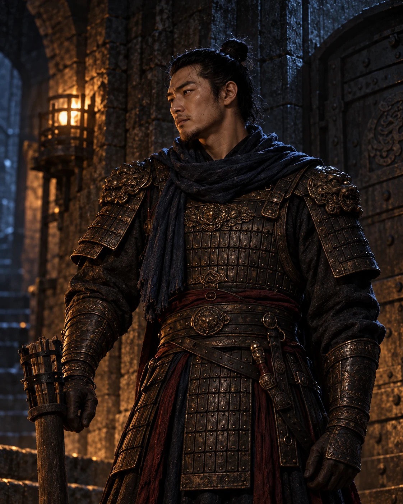
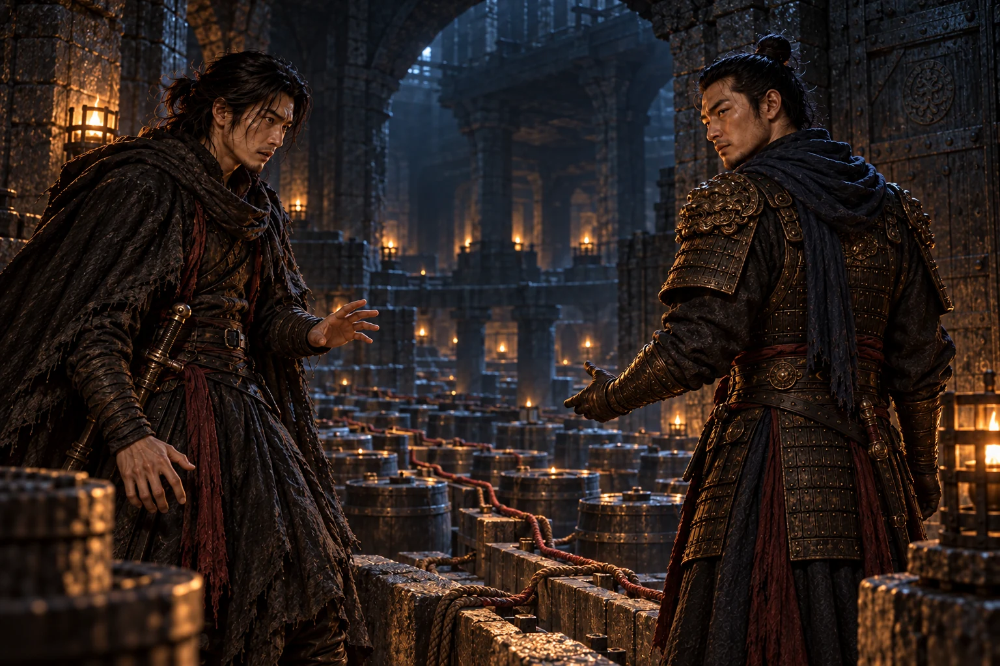
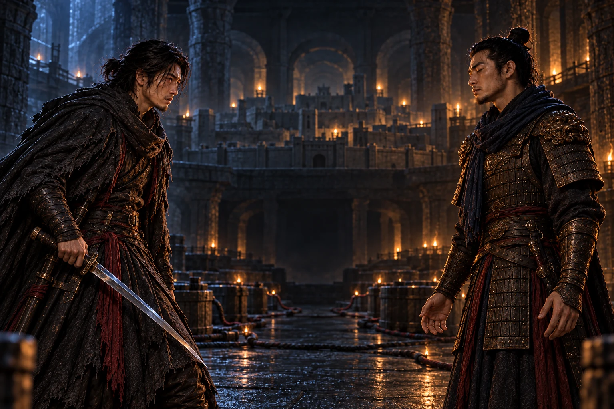
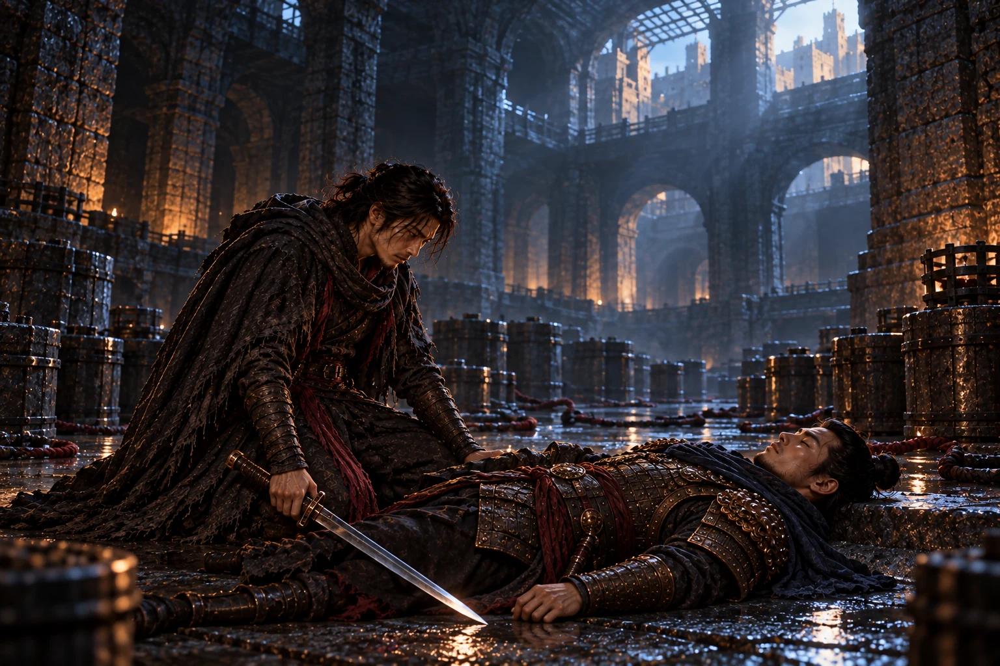

间谍
潜伏者 · 城邦守护者
多年周旋于敌营与生死之间，背负骂名与罪责，只为守住故土和城邦万民。他理性、隐忍，却把少年时代的唯一挚友视为最后的温情。
信念：无辜者不应为任何理想献祭，守护万民是不可推卸的宿命。

架空城邦 · 五幕战争悲剧 · 完整叙事版
当唯一的故友站在整座城的对立面，守护便成为最残酷的背叛。
城邦与挚友，从此水火不容。没有折中，没有退路，也没有两全。
DRAMATIS PERSONAE
潜伏者 · 城邦守护者
多年周旋于敌营与生死之间，背负骂名与罪责，只为守住故土和城邦万民。他理性、隐忍，却把少年时代的唯一挚友视为最后的温情。
信念：无辜者不应为任何理想献祭，守护万民是不可推卸的宿命。

旧城守卫 · 投敌者
曾与间谍立誓守城，后来亲眼看见权贵压榨百姓、将士死于无谓征伐。他把愤懑压进沉默，最终相信毁灭旧秩序才能换来新生。
信念：腐朽的城邦不值得延续，牺牲一城是重建秩序必须付出的代价。

［深夜。地窖深处响起几声轻叩，石门缓缓推开。守夜人独自走入，漫不经心地哼着二人幼年的歌谣。］
间谍抬眸，以为这是多年不见的故人前来叙旧。熟悉的旋律穿过潮冷空气，他卸下了所有戒备，也短暂忘记了敌营、伪装与刀箭。
间谍多少年了，我以为再也听不见这支曲子。沙场刀箭，敌营伪装，无数个生死关头，我总靠着回忆这歌声撑下去。
守夜人没有迎上他的目光，只缓缓转身，背对摇曳灯火。那张脸平静得近乎漠然，仿佛温暖的少年岁月只是隔着漫长战火的一场旧梦。
守夜人年少的时光那么真实，我才不愿兵刃相见。
这句话没有久别重逢的欣喜，更像一句提前说出的悼词。间谍眉头微蹙，心底掠过不安。
他们共同记得旧曲，却已站在不同的世界里。

［灯火渐冷。守夜人站在成排火药与引线之前，终于坦白隐忍数年的真相。］
守夜人我早已投敌。今夜，我已将烈性火药安置于城邦中央的地窖，只待时辰一至，城防崩塌、万民倾覆、故土化为焦土。
间谍浑身一震，嘴唇微颤。他曾设想过无数种背叛，却从未想过背叛会以熟悉的歌声为开端。
间谍为什么？城邦待你不薄，我们曾发誓要守护这片土地！何以要走到这一步？
守夜人城邦权贵昏庸，视底层人命如草芥。我看着百姓被苛捐压榨，看着将士白白葬送。敌营许诺新的秩序。于我而言，牺牲一城，方能换来新生。
他不是因贪欲投敌，也不是因怯懦逃亡。他选择以一城生灵为代价，砸碎自己认定的腐朽秩序。动机中的正义，无法洗去手段中的残酷。
间谍所以你今夜前来，不是为了叙旧？
守夜人是告别。我决定毁灭我们过去拼尽性命守护的一切，却不想抹去我们的少年情谊。
守夜人手握城池命脉，也亲手把故友情谊推到审判席上。

［地窖寒风四起。远处传来城上巡夜的钟声，时间正逼近引线点燃的时辰。］
一瞬间，间谍半生笃信的清白彻底碎裂。他周旋生死、隐忍罪孽、背负骂名，拼命守护的唯一挚友，竟成为潜伏在城邦深处、即将覆灭故土的人。
摆在他面前的只有一条路：若保全挚友，全城万民覆灭；若保全城邦，便必须亲手斩杀唯一的旧友。没有折中，没有退路，没有两全。
间谍你明明知晓，我身负守护城邦万民的宿命。你知道我会陷入何等痛苦的境地，依旧要将这份抉择丢给我？
守夜人我没有别的人选。除了你，没有人能阻拦我；也唯有你，懂得我们之间所有过往。
守夜人缓缓闭上双眼。他不会束手就擒，也不会撤销火药的布置。所谓告别，并不是求得宽恕，而是要让最懂自己的人见证选择的代价。
守夜人今日，不是你死，便是满城生灵赴死。
城与友不再是两个名字，而是刀锋两侧不可共存的生命。

［间谍缓缓拔出利刃，刀锋映着幽暗残光。守夜人握住短刃，挡在通往火药引线的石阶前。］
昔日并肩同行的故人，此刻站在彼此对立面。他们熟悉对方每一次换步、每一个防守习惯，正如熟悉那支童年歌谣。记忆没有帮助他们停手，反而让每一招都更加准确。
守夜人不肯撤销布置。间谍也不能容许无辜者为一种尚未到来的秩序陪葬。一个人要以毁灭终止腐朽，一个人要以守护拒绝牺牲，两种信念在狭窄地窖里碰撞。
守夜人若连你也无法阻止我，这座城便该接受它的命运。
间谍城中万民无辜，故土山河无罪。你的愤怒不能成为他们的死刑。
利刃挥落的瞬间，天地无声。守夜人的短刃从手中滑下，他的身体缓缓倒地。间谍俯身接住故人，仿佛仍想托住那段早已失去归处的少年岁月。
间谍这是我欠你的。
他诛杀罪人、护住城邦，却也亲手杀死了自己唯一的故人。

［引线被截断。黎明从高处铁栅落下，照见寂静地窖，也照见倒下的守夜人。］
城防没有崩塌，战火暂缓，万民得以安宁。地面上的人不会知道这一夜发生过什么，也不会知道他们的生命曾系于两个故友之间的一次抉择。
间谍赢得了天下大义，却失去了自己的世界。他守住城邦律法、家国苍生，也背负了永远无法偿还的罪孽。那支歌仍在记忆里回响，却再也没有另一个人能够与他唱完。
他亲手斩断唯一的温情，埋葬少年情谊。在无人知晓的幽暗地下室，在故人逝去的身旁，这位同时背负大义与罪孽的双面间谍，最终选择了自我终结。
城邦迎来清晨，而他的世界永远停在了地窖的黑夜。
TRAGIC CONFLICT
间谍坚持无辜者的生命不能被当作手段。他选择城邦，不是认同权贵，而是拒绝让百姓为权力与理想承担死亡。
守夜人看见旧秩序真实的腐朽，他的愤怒并非虚妄。悲剧在于他把应当反抗的对象扩大为整座城与所有平民。
《城与友》的悲剧不在于善恶对决，而在于两种都能说出理由的选择，最终只能通过彼此毁灭获得结果。